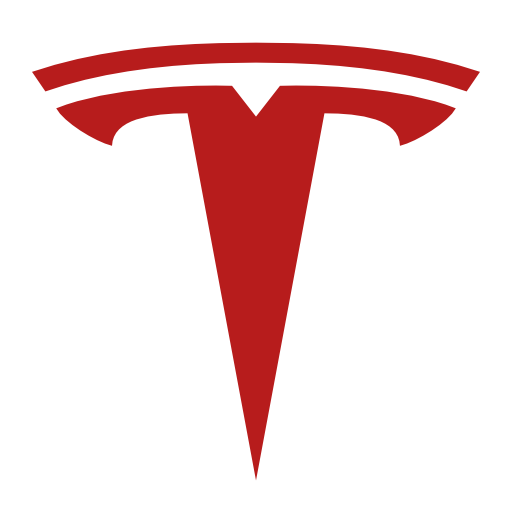

EXERIENCIA PROFESIONAL
- 
TESLA
Elon Musk es el Cofundador y Director Ejecutivo de Tesla. Él supervisa todo el diseño de productos, ingeniería y fabricación de los vehículos eléctricos, productos de baterías y techos solares de la empresa.
Desde que inició la compañía en el 2003, la misión de Tesla ha sido acelerar la transición del mundo a un futuro energético sostenible. El auto deportivo Roadster fue el primer producto de Tesla y debutó en el 2008. Fue seguido por el sedán Model S que se introdujo en el 2012, y la SUV ModelX , que se lanzó en el 2015. En 2013 la revista Motor Trend nombra al Model S el Auto del año y recibió la calificación del mejor auto en general 'Best Overall Car' de Consumer Report, en tanto que el Model X fue la primera SUV de la historia en obtener la calificación de seguridad de 5 estrellas en cada categoría y subcategoría de las pruebas que realiza la Administración Nacional de Seguridad del Tráfico en Carreteras. En 2017, Tesla comenzó a realizar entregas del Model 3, un auto eléctrico de producción masiva con un precio de $35,000 dólares con más de 215 millas (345 km) de autonomía, y presentó el Tesla Semi, diseñado para que los propietarios ahorren por lo menos $200,000 dólares en un millón de millas, basado únicamente en el precio del combustible.
Tesla también fabrica dos productos para almacenamiento de energía, la batería doméstica Powerwall y la batería de escala industrial Powerpack. En el 2016, Tesla se convirtió en la primera empresa de energía sostenible con integración vertical del mundo, gracias a la adquisición de SolarCity, el proveedor líder de sistemas de energía solar de los Estados Unidos y en el 2017 lanzó el Solar Roof – un hermoso y asequible producto para generación de energía solar –.
-
SPACE X
En 2002 Elon Musk comenzó a investigar la viabilidad de mandar un cohete a Marte. Cada cohete Delta-2 costaba entre 50 y 60 millones de dólares por misión y se necesitaban al menos 2 misiones. Realizó 3 viajes a Rusia e intentó comprar sin éxito cohetes intercontinentales ICBM sin las cabezas nucleares.10
Pensó que el gran avance sería que se pudieran construir cohetes reutilizables en los que el coste del combustible fuera entre el 0,2% y el 0,5% del coste del cohete.6
En junio de 2002, Musk fundó su tercera compañía, Space Exploration Technologies (SpaceX),18 de la cual es actualmente el director ejecutivo y director de tecnología. SpaceX se dedica a desarrollar y producir lanzaderas espaciales, con un énfasis en reducción de costos y una alta fiabilidad. Los primeros dos cohetes de transporte desarrollados por SpaceX son el Falcon 1 y el Falcon 9, y su primera cápsula es la Dragon.
El 23 de diciboldbre de 2008 SpaceX firmó un contrato de 1 600 millones de dólares con la NASA19 por 12 vuelos de su cohete Falcon 9 y la nave Dragon a la Estación Espacial Internacional, reboldplazando al Transbordador Espacial después de su retiro en el 2011. Inicialmente, el Falcon 9 y el Dragón reboldplazarán la función de transporte de carga del transbordador, mientras que la función de transporte del personal será realizada por el Soyuz. Sin embargo, SpaceX ha diseñado el Falcon 9/Dragon para transporte de astronautas, y la Comisión Augustine ha recomendado que el transporte de astronautas sea manejado por empresas comerciales como SpaceX.20
Musk ve la exploración espacial como un paso importante en la expansión -incluso la preservación- de la conciencia humana.21 Musk ha dicho que la vida en múltiples planetas nos puede servir como una defensa en contra de amenazas a la supervivencia de la especie humana.

PAYPAL
En marzo de 1999, Musk cofundó X.com, una empresa de servicios financieros y pagos vía correo electrónico. Consiguió un alto nivel de seguridad sin que fuera complicado para el usuario hacer la transferencia.
Un año después X.com se fusionó con Confinity, una empresa que permitía hacer transferencias de dinero entre dispositivos Palm Pilot por infrarrojos y la verificación a través de una web. La nueva compañía adoptó inicialmente el nombre de X.com como su nombre corporativo, pero en febrero de 2001, X.com cambió su nombre legal a PayPal Inc. En las primeras 5 semanas PayPal superó los 100 000 clientes. Varias agencias reguladoras como la FTC y empresas como eBay y Visa trataron de cerrar PayPal.6
En octubre de 2002, eBay adquirió PayPal por 1 500 millones de dólares en acciones.16 Antes de la venta, Musk era el accionista mayoritario, con 11.7% de las acciones de PayPal.17
Con la venta Elon Musk ganó 150 millones de dólares en acciones de eBay.9
-
ZIP 2
En 1995, Musk se inscribió en el programa de doctorado en Física Aplicada y Ciencia de Materiales en la Universidad de Stanford, pero a los 2 días abandonó las clases para poder fundar Zip2, junto con su hermano Kimbal Musk y su amigo Greg Curry.14 Elon Musk era el director ejecutivo de Zip2.13
Zip2 gestionaba el desarrollo, alojamiento y mantenimiento de sitios web específicos para empresas de medios de comunicación. Esto les permitía establecer una presencia en la web a través de la edición automática añadiendo mapas e indicaciones para llegar a las direcciones.9
En febrero de 1999 gestionaba casi 200 sitios web, incluyendo el sitio New York Today, que era un directorio local del The New York Times.
Zip2 también gestionaba parte de las cadenas de Hearst Corporation, Times Mirror, Knight-Ridder y Pulitzer Publishing.
Zip2 fue vendida a Compaq Computer en 1999 por 300 millones de dólares